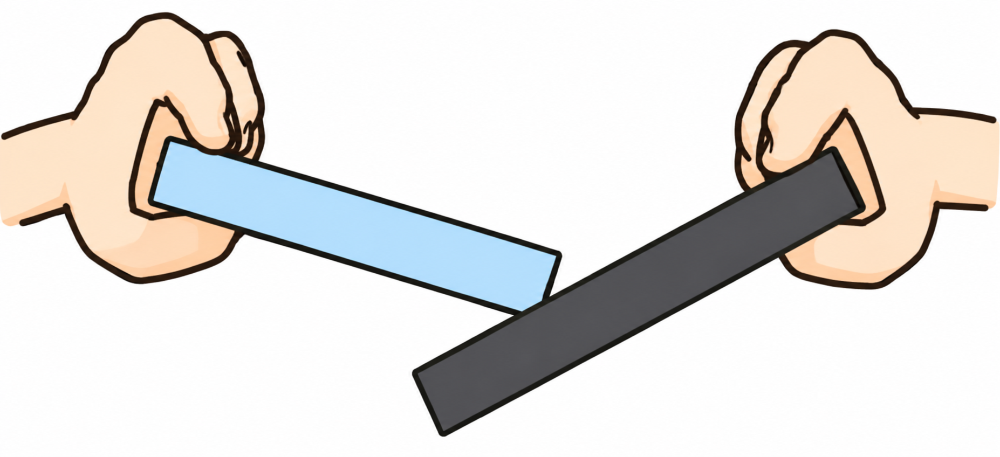
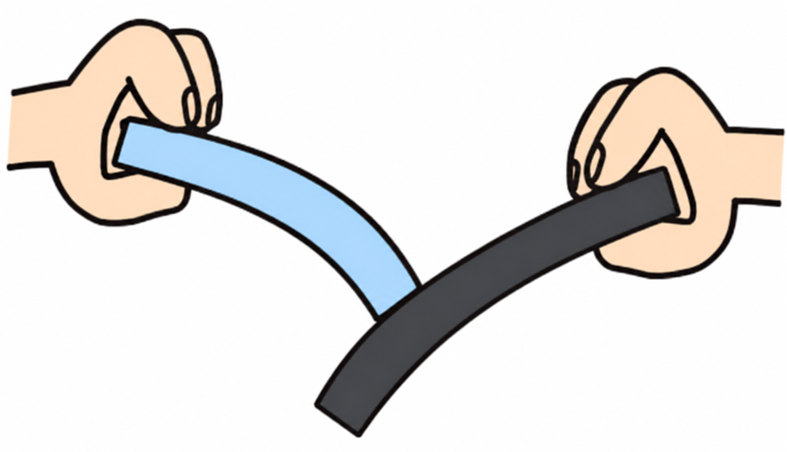
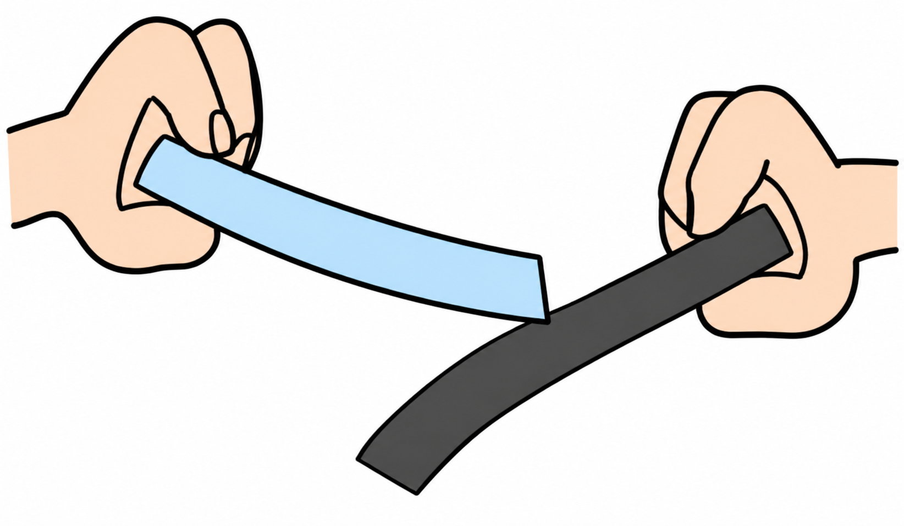
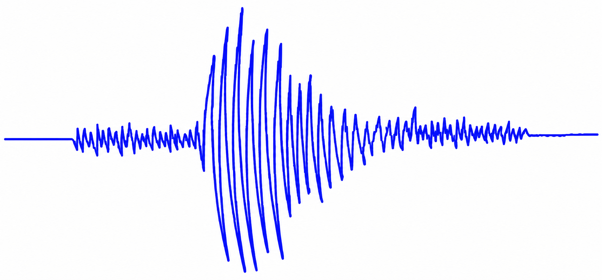
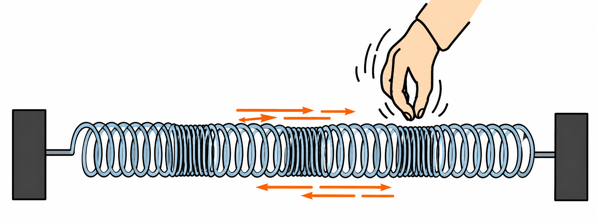
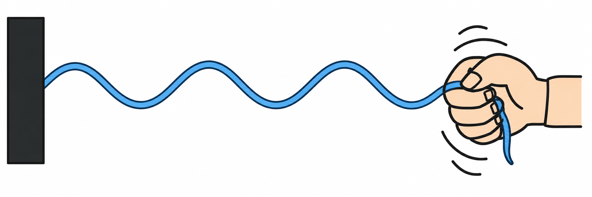
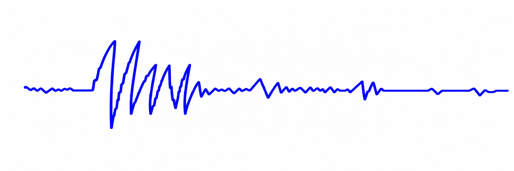
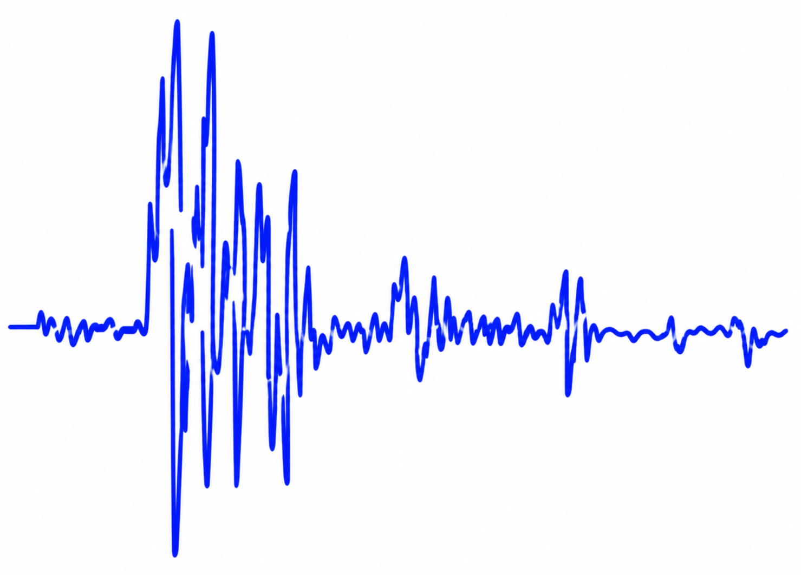

Aの大陸プレートの下に、Bの海洋プレートがもぐりこんでいます。もぐりこむ海洋プレートに引きずられて大陸プレートにひずみ(ストレス)がたまり、プレートが元に戻ろうとするときに地震が発生すると考えられています。



太平洋側の震源の深さは一般的に浅く、日本海側で発生する地震の震源の深さは深いという特徴があります。これは、太平洋側から沈みこんだ海洋プレートが、日本海側に向かって次第に深くなっていくためです。
- 大陸プレートの下に海洋プレートがもぐりこみ、ひずみがたまる
- プレートが元に戻ろうとするときに地震が発生する
- 震源の深さ:太平洋側は浅く、日本海側に向かうほど深くなる
🏆 ベストタイム

P波は初期微動を起こす、速さの速い波(7〜8km/秒)です。音と同じように、進行方向と同じ方向に振動する縦波です。
S波は主要動を起こす、速さの遅い波(3〜4km/秒)です。進行方向に対して垂直に振動する横波です。


地震が発生すると、震源からP波とS波が同時に発生しますが、観測地まで届くのはP波の方が早く、S波の方が遅れて届きます。このP波とS波の到達時間の差を初期微動継続時間といいます。
P波の「P」は「初期(Primary)」の意味、S波の「S」は「2番目(Secondary)」の意味です。P波が先に届いて小さなゆれ(初期微動)が起き、少し遅れてS波が届いて大きなゆれ(主要動)が起こります。
- P波……初期微動・速い(7〜8km/秒)・縦波
- S波……主要動・遅い(3〜4km/秒)・横波
- 初期微動継続時間 ＝ S波が届いた時刻 − P波が届いた時刻
🏆 ベストタイム
震度は、ある場所の地震のゆれの大きさを10段階で表します(震度計で測定)。
| 震度 | ゆれや被害のようす |
|---|---|
| 0 | 人はゆれを感じない |
| 1〜2 | 屋内の人の一部〜多くがわずかなゆれを感じる |
| 3〜4 | 屋内のほとんどの人が感じ、棚の食器類が音をたてたり、置き物が倒れたりする |
| 5弱〜5強 | 窓ガラスが割れたり、重い家具が倒れたりする |
| 6弱〜6強 | 立っていられず、耐震性の低い建物が壊れる |
| 7 | ほとんどの建物が壊れ、広い地域で電気・ガス・水道が止まる |
マグニチュードは、地震の規模の大きさ(放出エネルギーの大きさ)を表す単位で、記号はMです。マグニチュードが1つ増加すると、エネルギー量は約32倍大きくなります。
震度は「その場所のゆれの大きさ」、マグニチュードは「地震そのものの規模」です。同じ地震でも、震源からの距離や地盤によって震度は場所ごとに異なりますが、マグニチュードは1つの地震に対して1つの値に決まります。
- 震度……その場所のゆれの大きさ。10段階で表す
- マグニチュード(M)……地震の規模(エネルギー)の大きさ。1つ増えるとエネルギーは約32倍
- 震度は場所によって異なるが、マグニチュードは1つの地震に1つだけ決まる
🏆 ベストタイム
観測地から震源までの距離は、初期微動継続時間に比例します。これを利用すると、震源からの距離や地震発生時刻を計算で求めることができます。


解)震源からの距離は初期微動継続時間に比例するので、
80km：160km ＝ 10秒：χ秒
答え) χ＝20秒
解)P波の速さ ＝ 震源からの距離 ÷ P波が伝わる時間
例えば10秒で80km進むP波なら、80km÷10秒＝8.0km/秒
- 震源からの距離 ∝ 初期微動継続時間(比例の関係)
- 速さ(km/秒) ＝ 距離(km) ÷ 時間(秒)
- 地震発生時刻 ＝ P波の観測時刻 − (震源までの距離 ÷ P波の速さ)